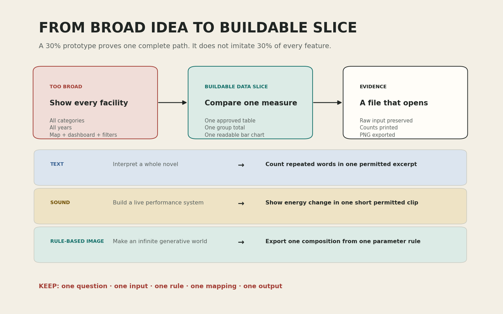

많은 기능을 나열하는 계획에서 하나의 완전한 제작 경로로
오늘의 학습 목표
- 기술 이름을 나열한 계획과 질문·독자·입력·결과가 연결된 프로젝트 문장을 구분할 수 있습니다.
- 큰 아이디어를 한 질문, 한 입력, 한 처리 규칙, 한 시각 규칙, 한 결과 파일로 줄일 수 있습니다.
- 입력 한 건의 의미와 값이 시각 요소로 바뀌는 규칙을 설명할 수 있습니다.
- 시각화가 직접 보여 주는 관찰과 현재 자료만으로 단정할 수 없는 해석을 분리할 수 있습니다.
- 핵심·보완·확장 기능과 실패 시 대체 경로를 구분할 수 있습니다.
- 2교시 1차 면담에 사용할 프로젝트 카드 초안을 완성할 수 있습니다.
- 0-6분13주차 연결
씨앗 카드와 완성작 사이의 다섯 단계를 찾습니다.
- 6-14분프로젝트 문장
도구 목록을 질문·독자·입력·결과로 바꿉니다.
- 14-24분범위 축소 사례
데이터·텍스트·사운드·규칙 이미지 계획을 제작 가능한 크기로 줄입니다.
- 24-34분입력과 표현
관찰 단위와 시각적 매핑을 한 쌍으로 정합니다.
- 34-43분핵심과 대체 경로
필수·보완·확장을 나누고 막힐 때의 경로를 정합니다.
- 43-50분프로젝트 카드
면담에서 확인할 일곱 항목을 개별로 기록합니다.
- 50-60분선택 확장
두 범위안을 비용과 증거로 비교합니다.
수업 운영: 기본 50분과 선택 확장 10분
기본 50분에는 13주차 연결, 프로젝트 문장, 네 가지 범위 축소 사례, 입력과 표현, 핵심·보완·확장 구분, 프로젝트 카드 작성까지 진행합니다. 모든 판단과 기록이 일찍 끝난 경우에만 50-60분 확장에서 두 번째 범위안을 비교합니다. 확장은 3교시 귀가 조건과 추가 점수에 포함하지 않습니다.
프로그래밍을 몰라도 먼저 붙잡을 문장
14주차의 30%는 전체 화면의 30%가 아니라, 처음부터 끝까지 연결된 핵심 경로 하나입니다. 입력을 불러오고, 한 규칙으로 처리하고, 한 화면으로 보여 주고, 다시 열 수 있는 파일로 저장되면 프로젝트의 중심이 작동한 것입니다.
0-6분 · 13주차의 씨앗 카드에서 남은 일을 찾기
13주차에는 소리의 파형·RMS·스펙트로그램을 읽고, 기말 프로젝트 씨앗 카드에 질문, 입력 후보, 출처와 이용 권한, 변환 규칙, 예상 출력, 첫 제작 행동을 적었습니다. 이 카드는 완성된 설계도가 아니라 무엇을 먼저 시험할지 정하는 출발 문서입니다.
오늘은 새로운 주제를 처음부터 다시 고르지 않습니다. 씨앗 카드의 내용을 아래 다섯 단계에 놓아 보고, 비어 있거나 너무 큰 부분만 줄입니다. 자신의 결과물이 없어도 괜찮습니다. 데이터·텍스트·사운드·규칙 기반 이미지 가운데 하나를 골라 수업 제공 자료로 같은 구조를 완성할 수 있습니다.
실제로 열 수 있고 이용 권한이 확인되었는가?
원본과 작업본이 구분되어 있는가?
무엇을 세거나 바꾸거나 측정하는가?
값을 어떤 시각 요소에 연결하는가?
노트북 밖에서 다시 열리는가?
13주차의 매체 선택을 14주차 제작 경로로 번역하기
매체는 최종 작품이 어떤 형태로 경험되는지를 말하고, 제작 경로는 14주차에 가장 먼저 검증할 입력과 처리 방식을 말합니다. 두 이름이 반드시 같을 필요는 없습니다. 예를 들어 지도 작품도 먼저 위치 표가 안전하게 열리고 좌표가 유효한지를 데이터 경로에서 확인해야 합니다. 복합 작품은 모든 매체를 동시에 시작하지 않고 가장 중요한 입력 하나를 주 경로로 정합니다.
| 13주차 매체 | 14주차 주 경로 | 먼저 확인할 입력 | 30%에서 보일 최소 증거 | 뒤로 미룰 기능 |
|---|---|---|---|---|
image | image | 위치·크기·색 매개변수 또는 승인된 생성 코드 | 매개변수 수와 같은 수의 형태가 한 화면에 나타남 | 애니메이션, 실시간 조절, 다중 장면 |
map | data로 입력 검증 후 10주차 지도 코드 재사용 | 위도·경도·장소명·범주가 있는 승인된 표 | 유효한 한 행이 마커 또는 좌표 점 하나로 나타남 | 필터, 여러 레이어, 실시간 위치 |
text | text | 직접 작성했거나 분석 권한이 확인된 짧은 텍스트 | 토큰화 결과와 빈도 막대가 실제 횟수와 일치함 | 감정 자동 판정, 긴 문서 전체 해석 |
sound | sound | 직접 생성·녹음했거나 이용이 허용된 WAV | 샘플 수와 시간축이 확인되고 RMS 선이 나타남 | 실시간 마이크, 공연 제어, 다채널 합성 |
hybrid | 질문에 가장 중요한 주 경로 하나 | 결과의 의미를 결정하는 첫 번째 입력 | 주 입력이 처리되어 한 화면 또는 한 파일까지 이어짐 | 두 번째 매체 연결과 상호작용 |
복합 프로젝트도 14주차에는 한 줄로 시작합니다
“소리에 따라 이미지가 변한다”는 복합 계획이라면 14주차 주 경로는 소리일 수 있습니다. 먼저 WAV 한 편에서 RMS 값이 만들어지는지 확인하고, 그 값 하나가 원의 크기 하나를 바꾸는 데까지 연결합니다. 여러 음원, 실시간 반응, 애니메이션과 화면 전환은 15주차 보완 또는 확장으로 분리합니다.
확인: 최종 매체와 14주차 제작 경로는 반드시 같은가?
반드시 같지 않습니다. 지도는 먼저 표의 좌표를 검증하는 데이터 경로에서 시작할 수 있고, 복합 작품은 소리·텍스트·이미지 가운데 질문을 결정하는 주 입력 하나에서 시작할 수 있습니다. 다만 면담 카드에는 최종 매체와 이번 주 주 경로를 모두 적어, 무엇을 미뤘는지 분명히 남깁니다.
씨앗 카드에서 가장 불확실한 한 칸 표시하기
입력, 권한, 처리, 표현, 출력 가운데 아직 실제로 확인하지 않은 한 칸에 표시합니다. “코딩이 어렵다”처럼 넓게 쓰지 말고 “WAV가 실제로 열리는지 확인하지 않았다”처럼 확인 가능한 문장으로 적습니다.
확인: 13주차에 정한 주제를 오늘 바꾸면 안 되는가?
주제의 관심은 유지하되, 이용 권한이 없거나 한 주 안에 핵심 경로를 구현할 수 없다는 사실이 확인되면 범위 또는 입력을 바꿔야 합니다. 단순히 새 아이디어가 더 흥미로워 보인다는 이유로 다시 시작하면 검증할 시간이 줄어듭니다.
확인: 이전 주차 결과물이 없으면 프로젝트를 시작할 수 없는가?
아닙니다. 3교시 노트북은 데이터·텍스트·사운드·규칙 기반 이미지의 수업 제공 가상 자료를 포함합니다. 지도는 데이터 경로에서 표를 먼저 검증하고, 복합 프로젝트는 주 입력 한 가지를 선택합니다. 제공 자료로 완전한 경로를 먼저 만든 뒤 승인된 자신의 입력이나 5–13주차 코드로 교체할 수 있습니다.
6-14분 · 도구 목록을 프로젝트 문장으로 바꾸기
“pandas와 Matplotlib을 사용한다”는 문장은 사용할 도구를 알려 주지만, 누구에게 무엇을 보여 줄지는 알려 주지 않습니다. 반대로 프로젝트 문장은 예상 독자, 질문, 입력, 핵심 처리, 결과 형식이 서로 연결되어야 합니다.
프로젝트 문장 틀
나는 [예상 독자]가 [입력 자료]에서 [질문]을 확인할 수 있도록, [처리 규칙]으로 값을 만들고 [결과 형식]으로 보여 준다.
| 초안 | 판정 | 비어 있는 정보 | 수정 방향 |
|---|---|---|---|
| Python으로 멋있는 데이터 아트를 만든다. | 제작 불가 | 독자, 질문, 입력, 규칙, 출력 | 무엇의 어떤 차이를 누구에게 보여 줄지 정합니다. |
| CSV를 pandas로 분석하고 그래프를 만든다. | 부분 가능 | 질문, 독자, 비교 단위 | 한 행과 한 열의 의미, 비교할 범주를 적습니다. |
| 학과 학생이 세 공간의 이용 기록 차이를 볼 수 있도록, 승인된 9행 CSV를 공간별로 합산해 가로 막대 PNG로 보여 준다. | 제작 가능 | 자료 출처와 이용 조건 확인 | 출처와 권한을 더하면 면담 가능한 문장입니다. |
프로젝트 문장의 목적은 멋있게 들리는 소개문을 만드는 것이 아닙니다. 문장 안의 각 요소가 코드의 한 구역과 대응되도록 만드는 것입니다. “승인된 9행 CSV”는 입력 셀, “공간별 합산”은 처리 셀, “가로 막대”는 시각화 셀, “PNG”는 저장 셀로 이어집니다.
확인: 예상 독자를 “모든 사람”이라고 적어도 되는가?
가능한 독자의 범위가 너무 넓으면 필요한 설명 수준을 정하기 어렵습니다. “학과 공간을 처음 이용하는 학생”, “짧은 텍스트의 반복을 살펴보려는 독자”처럼 결과를 볼 상황이 떠오르는 사람으로 좁힙니다.
확인: 프로젝트 질문은 작품 제목과 같은가?
반드시 같지는 않습니다. 질문은 제작 과정에서 무엇을 검증할지 정하는 문장이고, 작품 제목은 완성 단계에서 독자에게 맥락을 여는 이름일 수 있습니다. 14주차에는 먼저 데이터와 코드로 답할 수 있는 질문을 분명하게 씁니다.
14-24분 · 큰 계획을 하나의 완전한 경로로 줄이기

| 처음 계획 | 이번 주에 제외 | 30% 프로토타입 | 확인할 증거 |
|---|---|---|---|
| 서울의 모든 문화시설을 지도·그래프·필터로 설명한다. | 전체 지역, 여러 연도, 지도 필터, 실시간 갱신 | 승인된 9행 표에서 세 공간의 이용 값을 합산한 가로 막대 PNG | 입력 9행, 막대 3개, 합계 일치, PNG 열림 |
| 한 소설의 감정과 의미를 전부 분석한다. | 작품 전체, 감정 자동 판정, 저자 의도 해석 | 이용 권한이 확인된 짧은 발췌문에서 반복 단어 8개를 세어 순위로 표현 | 토큰 수, 단어·빈도 목록, 막대 길이 일치 |
| 관객 반응에 따라 변하는 실시간 공연 시스템을 만든다. | 마이크 입력, 네트워크, 실시간 제어, 공연 설치 | 직접 만든 4초 소리의 구간별 에너지 변화를 선으로 표현 | 샘플 수, 프레임 수, 시간축, 선 데이터, PNG 열림 |
| 매번 끝없이 변하는 생성 세계를 만든다. | 무한 장면, 실시간 조작, 복수 알고리즘, 애니메이션 | 승인된 위치·크기·색 매개변수 한 표를 원 다섯 개의 구성으로 표현 | 매개변수 5건, 도형 5개, 위치·크기 일치, PNG 또는 HTML 열림 |
네 사례에서 줄인 것은 주제의 의미가 아니라 동시에 해결해야 하는 기술 문제의 수입니다. 지도를 빼도 공간 이용의 비교 질문은 남고, 감정 분석을 빼도 반복 단어의 패턴은 남으며, 실시간 입력을 빼도 소리 에너지와 시간의 관계는 남습니다. 무한 변주를 빼도 매개변수가 위치·크기·색을 바꾸는 생성 규칙은 남습니다.
넓은 삶을 한 주의 기록 규칙으로 줄이기
Dear Data는 매주 하나의 생활 주제와 기록 규칙을 정해 손으로 그린 엽서로 바꾸었습니다. 이번 수업에서는 외형을 따라 그리기보다 관찰 범위, 기록 단위, 시각 부호, 설명이 어떻게 한 세트가 되는지 읽습니다.
Dear Data 공식 프로젝트 보기 ↗질문에 필요한 비교 구조를 설계하기
Du Bois의 데이터 초상은 표 전체를 그대로 옮기지 않고, 각 도표가 전달할 사회적 질문과 비교 기준을 선택합니다. 14주차에는 색과 형태보다 어떤 자료를 어떤 주장에 맞게 골랐는가를 확인합니다.
Library of Congress 원본 기록 보기 ↗복잡한 이미지를 짧은 규칙에서 시작하기
규칙 기반 작품은 결과가 복잡해 보여도 먼저 요소와 행동의 관계를 정합니다. 자신의 생성 프로젝트도 효과를 계속 더하기 전에 매개변수 하나가 형태의 무엇을 바꾸는가부터 작동시킵니다.
Whitney Museum 사례 보기 ↗공식 사례는 스타일 참고판이 아닙니다
색, 선, 구도를 복제하기 전에 질문은 무엇인가, 입력은 무엇인가, 한 기록은 무엇인가, 어떤 규칙으로 바뀌는가, 결과가 직접 보여 주지 못하는 것은 무엇인가를 적습니다. 사례의 외형을 그대로 따라 하는 것은 자신의 범위를 정하는 일을 대신하지 못합니다.
확인: 기능을 많이 빼면 프로젝트가 너무 단순해지지 않는가?
단순한 핵심 경로와 얕은 프로젝트는 다릅니다. 입력과 질문의 대응, 처리 규칙의 타당성, 시각적 매핑의 정확성, 출처와 한계를 분명히 설명하면 한 화면도 충분히 깊은 프로토타입이 됩니다. 추가 기능은 핵심이 작동한 뒤 판단합니다.
확인: 범위 축소는 결과의 크기만 줄이는 일인가?
아닙니다. 데이터 기간, 범주 수, 입력 길이, 처리 규칙 수, 출력 형식, 상호작용 수를 함께 줄일 수 있습니다. 무엇을 줄여야 질문이 가장 선명해지는지를 먼저 봅니다.
24-34분 · 입력 한 건과 시각적 매핑을 한 쌍으로 정하기
코드는 입력 전체를 한 덩어리로 이해하지 않습니다. 데이터 한 행, 텍스트 한 토큰, 소리 한 샘플 또는 한 프레임처럼 반복해서 처리할 단위가 필요합니다. 이 단위를 관찰 단위라고 부릅니다. 관찰 단위가 불분명하면 그래프의 점, 막대, 선 하나가 무엇을 뜻하는지도 불분명해집니다.
| 경로 | 입력 한 건 | 처리 규칙 | 만들어진 값 | 시각적 매핑 |
|---|---|---|---|---|
| 데이터 | 한 공간의 한 관찰 기록 | 공간 범주별 value 합산 | 범주별 합계 3개 | 범주 → 세로 위치, 합계 → 막대 길이 |
| 텍스트 | 정규화한 단어 하나 | 같은 단어의 출현 횟수 계산 | 단어별 빈도 | 단어 → 세로 위치, 빈도 → 막대 길이 |
| 사운드 | 50밀리초 길이의 짧은 프레임 | 프레임별 RMS 에너지 계산 | 시간에 따른 에너지 값 | 시간 → 가로 위치, 에너지 → 세로 위치 |
| 규칙 기반 이미지 | 반복 한 번에 생성되는 형태 하나 | 매개변수로 위치·크기 계산 | 형태별 좌표와 크기 | 계산값 → 위치·크기·색상 |
“색을 예쁘게 고른다”는 매핑 규칙이 아닙니다. “값이 클수록 막대가 길어진다”, “시간이 뒤일수록 오른쪽에 놓인다”, “범주가 다르면 색상과 표식 모양을 함께 바꾼다”처럼 입력 값과 화면의 변화가 대응되어야 합니다.
내 프로젝트의 한 건과 한 표시 쓰기
“입력 한 건은 ___이고, 처리 뒤 만들어지는 값은 ___이며, 결과에서는 그 값을 ___에 연결한다”라는 한 문장을 작성합니다. 아직 입력이 없다면 선택한 수업 제공 경로를 기준으로 씁니다.
확인: CSV 한 파일이 관찰 단위인가?
대개 파일은 여러 관찰을 담는 그릇입니다. 한 행이 한 장소인지, 한 날짜인지, 한 작업인지 확인해야 합니다. 같은 파일 안에서도 질문에 따라 집계 뒤의 범주 하나가 그래프의 막대 하나가 될 수 있습니다.
확인: 소리의 샘플 하나를 그대로 점 하나로 그리면 항상 충분한가?
파형에는 샘플 단위가 필요하지만, 시간에 따른 에너지 변화를 비교하려면 여러 샘플을 짧은 프레임으로 묶어 하나의 RMS 값으로 요약하는 편이 적절합니다. 질문에 따라 필요한 관찰 단위가 달라집니다.
화면이 보여 주는 관찰과 보여 주지 못하는 해석
| 결과 | 직접 관찰 가능 | 현재 자료만으로 단정 불가 | 추가로 필요한 자료 |
|---|---|---|---|
| 공간별 합계 막대 | Archive 합계가 세 범주 중 가장 길다. | Archive가 가장 좋은 공간이다. | 이용 목적, 만족도, 수용 인원 |
| 반복 단어 순위 | record가 제공 발췌문에서 8회 등장한다. | 작가가 기록을 가장 중요하게 생각했다. | 작품 전체, 맥락, 문학적 분석 |
| 소리 RMS 곡선 | 약 0.7초와 3.0초 부근의 상대 에너지가 높다. | 두 구간이 가장 감동적이다. | 청취자 반응, 녹음 조건, 맥락 |
34-43분 · 핵심, 보완, 확장과 대체 경로 나누기
프로젝트의 모든 기능을 같은 우선순위로 두면 가장 중요한 경로도 완성되지 않습니다. 기능을 아래 세 층으로 나눕니다. 판단 기준은 “멋있어 보이는가?”가 아니라 이 기능이 없으면 질문에 답할 수 없는가?입니다.
| 층위 | 판별 질문 | 데이터 프로젝트 예 | 처리 시점 |
|---|---|---|---|
| 핵심 | 없으면 질문에 답하는 경로가 끊기는가? | CSV 불러오기, 범주별 합계, 막대그래프, PNG 저장 | 14주차에 반드시 작동 |
| 보완 | 핵심을 더 정확하고 읽기 쉽게 만드는가? | 축 단위, 출처, 색상 대비, 오류 메시지, 제목 정리 | 14주차 기록 후 15주차 개선 |
| 확장 | 없어도 핵심 질문에 답할 수 있는가? | 필터, 애니메이션, 여러 화면, 실시간 갱신 | 필수 결과 보존 뒤에만 시도 |
대체 경로는 실패가 아니라 수업 목표를 지키는 장치
입력 파일이 열리지 않거나 권한이 확인되지 않으면 기술 구현을 계속 밀어붙이지 않습니다. 수업 제공 자료로 동일한 처리와 표현 규칙을 먼저 작동시킵니다. 복잡한 그래프가 막히면 하나의 막대 또는 선으로 줄이고, 인터랙티브 HTML이 막히면 정적 PNG로 저장합니다.
| 위험 신호 | 멈출 지점 | 대체 경로 | 유지되는 학습 목표 |
|---|---|---|---|
| 외부 CSV 열 이름이 계속 달라진다. | 시각화 전에 멈춤 | 수업 제공 category·value CSV | 원본 보존, 집계, 막대 매핑 |
| 텍스트 이용 허가가 불분명하다. | 업로드 전에 멈춤 | 교수자 창작 짧은 텍스트 | 토큰화, 빈도, 순위 표현 |
| 음원이 스테레오이거나 형식이 맞지 않는다. | 분석 전에 멈춤 | 수업 제공 모노 합성 신호 | 프레임, RMS, 시간축 |
| 인터랙션 구현이 결과 저장을 막는다. | 상호작용 추가를 멈춤 | 1600 × 1000 정적 PNG | 입력-처리-표현-저장의 완전한 경로 |
확인: 대체 자료를 쓰면 내 프로젝트가 아니게 되는가?
14주차의 목적은 주제의 최종 독창성을 평가하는 것이 아니라 핵심 코드 경로를 검증하는 것입니다. 자신의 질문과 처리·표현 규칙을 유지한 채 안전한 대체 입력으로 구조를 확인하고, 15주차에 승인된 자료로 교체할 수 있습니다.
확인: 핵심이 끝나기 전에 색상과 글꼴을 정해도 되는가?
기본 가독성을 위한 설정은 필요하지만, 입력과 처리 결과가 맞는지 확인하기 전에 세부 스타일에 오래 머물지 않습니다. 값과 그래프 요소가 일치하고 파일이 열린 뒤 색상·위계·레이아웃을 보완합니다.
43-50분 · 1차 면담용 프로젝트 카드 완성하기
아래 일곱 항목은 2교시 면담에서 그대로 확인합니다. 문장을 길게 꾸미기보다 파일, 열, 단위, 규칙, 결과 형식을 구체적으로 씁니다. 아직 확인하지 않은 항목에는 사실처럼 추측하지 말고 “확인 필요”와 확인 방법을 함께 적습니다.
| 항목 | 작성할 질문 | 데이터 경로 예 |
|---|---|---|
| 1. 프로젝트 질문 | 이 입력으로 실제로 답할 수 있는가? | 세 공간의 기록 합계는 어떻게 다른가? |
| 2. 예상 독자 | 누가 어떤 상황에서 보는가? | 학과 공간을 처음 이용하는 학생 |
| 3. 입력과 출처 | 어떤 파일의 무엇을 쓰는가? | 교수자 제공 9행 가상 CSV, 한 행은 한 관찰 기록 |
| 4. 이용 조건 | 분석·변형·제출할 권한이 있는가? | 수업 실습용 제공 자료 |
| 5. 처리 규칙 | 무엇을 어떻게 바꾸는가? | category별 value 합산 |
| 6. 시각화 규칙·출력 | 값을 무엇에 연결하고 무엇으로 저장하는가? | 합계 → 막대 길이, 1600 × 1000 PNG |
| 7. 가장 큰 위험·대체 경로 | 무엇이 막힐 수 있고 즉시 무엇으로 바꾸는가? | 외부 표 형식이 다르면 수업 제공 CSV로 전환 |
면담용 프로젝트 카드 초안
일곱 항목을 모두 작성한 뒤 마지막에 한 문장을 덧붙입니다. “이번 주에 하지 않을 것은 ___이며, 그 이유는 핵심 경로를 먼저 검증하기 위해서이다.” 2교시에는 이 카드와 실제 입력 파일 또는 수업 제공 경로를 함께 확인합니다.
확인: 출처에는 검색한 사이트 이름만 적으면 되는가?
검색 서비스는 자료의 작성자나 제공자가 아닙니다. 자료 제목, 작성자 또는 기관, 원본 주소, 이용 조건, 필요하면 수집 시점을 기록합니다. 직접 만든 자료라면 직접 제작했다는 사실과 제작 방식을 적습니다.
확인: 가장 큰 위험을 “코드 오류”라고 쓰면 충분한가?
너무 넓습니다. “외부 CSV에 category 열이 없을 수 있다”, “WAV가 모노 PCM이 아닐 수 있다”, “한글 제목이 이미지에서 깨질 수 있다”처럼 확인할 대상과 대체 행동이 보이도록 씁니다.
50-60분 · 선택 확장: 두 범위안을 증거와 비용으로 비교하기
기본 프로젝트 카드를 완성한 학생만 개별로 진행합니다. 같은 질문에 대해 A안은 가장 단순한 정적 결과, B안은 기능 하나를 추가한 결과로 작성합니다. 다음 네 항목을 비교한 뒤 어느 안을 14주차 범위로 선택할지 세 문장으로 설명합니다.
- 두 안이 공통으로 남기는 핵심 질문과 입력을 적습니다.
- B안에 추가되는 파일, 라이브러리, 데이터 열 또는 상호작용을 적습니다.
- 각 안의 정상 작동을 증명할 검사를 적습니다.
- B안이 실패해도 A안의 결과 파일을 보존할 수 있는지 확인합니다.
확장 활동 완료 기준
A안과 B안의 핵심 질문, 추가 비용, 검사 증거, 실패 시 보존 방법을 비교하고 14주차에는 어느 안을 선택할지 근거 세 문장으로 작성하면 완료입니다. 선택 확장은 필수 과제나 추가 점수가 아닙니다.
수업 후 개별 복습
- 도구 목록과 프로젝트 문장의 차이를 한 사례로 설명합니다.
- 30% 프로토타입을 “화면의 30%”가 아닌 “완전한 경로 하나”로 설명합니다.
- 자신의 입력에서 관찰 단위 하나와 처리 뒤 만들어지는 값 하나를 적습니다.
- 그 값을 위치, 길이, 색상, 크기, 시간 가운데 무엇에 연결할지 적습니다.
- 현재 결과에서 관찰할 수 있는 사실과 단정할 수 없는 해석을 각각 한 문장으로 씁니다.
- 핵심·보완·확장 기능을 하나씩 적고, 실패 시 대체 경로를 한 문장으로 씁니다.
공식 사례와 참고 자료
- Dear Data — The Project한 주의 관찰 주제, 기록 규칙, 손으로 만든 시각 부호와 설명의 관계를 확인하는 공식 프로젝트 페이지
- MoMA — Dear Data 컬렉션 기록프로젝트가 미술관 컬렉션에서 어떤 매체와 연작으로 기록되는지 확인하는 자료
- Library of Congress — W.E.B. Du Bois 관련 차트와 그래프도표의 원본 이미지, 제작 정보와 역사적 맥락을 확인하는 공식 기록
- Whitney Museum — Casey Reas, Process짧은 규칙과 소프트웨어 프로세스가 시각 결과로 전개되는 공식 작품 소개